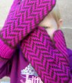

|
||
Premium Patterns Wintry Mix Mitts Love Bytes HawkeyeFree Patterns Kiddie Cadet Summerlin Ruffled Scarf Seamless DS Sock Simply Seamless Pouch Myriads of MushroomsExtras DIY Mitten Blocker Felt Patch Tutorial Yarn Dyeing Tutorial Needle Pouches Knitting Journal |
November 14, 2007 - Posted by Alice SchneblyMitten ManiaProject Specs I am so happy to have these mittens finished! Even though the weather is going to be above 75 degrees here in Las Vegas for the next few days nothing is going to stop me from wearing my gorgeous new mittens. I really love how they turned out and I am feeling much more confident with stranded knitting now. I don’t think I made any mistakes in the colorwork but now that I look back at the mittens after blocking I think I reversed my k2togs and ssks on the thumb shaping on the first mitten. I don’t think it is too noticeable so I’m not overly concerned, though next time I knit this pattern I’ll make sure I take extra care not to do that again! I love that this pattern calls for Cascade 220 Wool. I have plenty of it in my stash and I really enjoy knitting with it. It has to be one of my all time favorite yarns because of the price, versatility, and availability. These mittens are very squishy, warm, and plenty soft. I realized after I chose the colors that I really am a sucker for pink and brown together. I can’t seem to get enough of it! I think that this would be a great mitten pattern for a colorwork beginner. The pattern is easy to work and repeats every four rows. There also aren’t any long floats to deal with so I found it easier to keep my tension even. For me the fact that this pattern is worked in worsted weight yarn is a big plus since I am not accustomed to lighter weight yarns. If you can use DPNs or do Magic Loop, you can definitely make this pattern.  The only change I made to the pattern was to make it so I could remove the chain with the pompom on it if I wanted. Though I love how cute the pom is, I wanted to be able to wear the mittens without it if I wanted a less bulky or a more refined look. To make the pompoms removable, I left a loop when securing my cast on tail. The crochet chain attached to the pompom can be threaded through this loop and over the pompom to create a slip knot. I can definitely see making this pattern many more times! There are lots of colors I’d love to make them in. This pattern knits up really fast and has a real wow factor to it as well so these mittens would make fantastic gifts. I’m not the only one who loves these mittens in this household. Ever since I finished the first one Camdyn has been really interested in them. When I was done with both she exclaimed “It’s finished! It’s finished!” and wore the mittens around all night long. I think I’m going to have to knit Camdyn a pair of mittens for herself before the cold weather hits here. I was thinking of maybe the Children’s Felted Mittens from Felted Knit, or the Target Wave Mittens from Knitting Nature but I’d love hearing any pattern suggestions you might have! |
   Recent ReviewsRecent Posts
 Our Favorites
|
| © 2007 KathrynIvy.com | ||
{kind=link}
{kind=link}